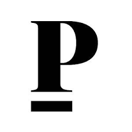
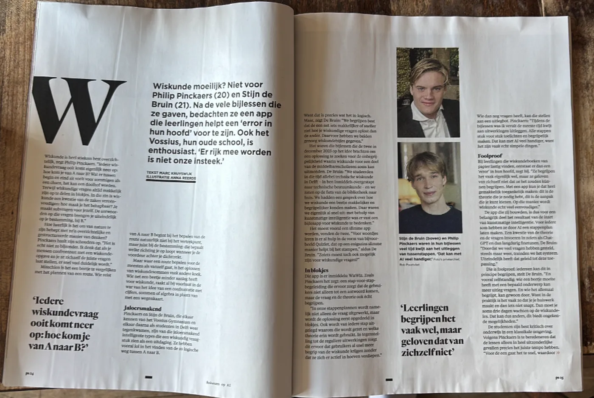
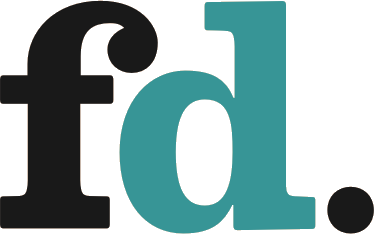
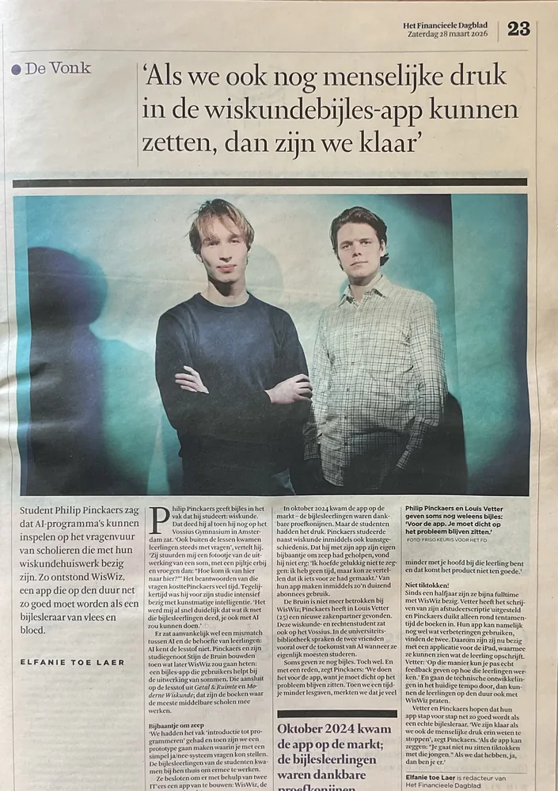
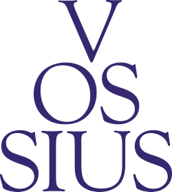
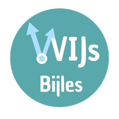

Betaalbare wiskundebijles die altijd klaarstaat.
WisWiz in 30 seconden“Mijn dochter is dit jaar voor het eerst naar de middelbare gegaan en al snel had ze wat hulp nodig bij wiskunde dus toen ik hoorde van WisWiz was ik heel enthousiast. Je krijgt bij elke opgave een goeie uitleg en kan zelfs vragen stellen. We gebruiken het meestal samen. Ik lees het en leg het aan haar uit. Op die manier kan ik haar veel beter helpen. Maar ze kan het ook in haar eentje gebruiken als ze wil. Als we deze app niet hadden gehad had ze waarschijnlijk wel op bijles gezeten. Echt een aanrader voor ouders en kinderen.”
“Ik zit zelf in de 6e klas en vroeg me af wanneer jullie H15 zullen vrijgeven, ik heb namelijk echt heel veel aan WisWiz gehad voor hoofdstuk 14.”

Het Parool



Leerlingen van het Vossius Gymnasium gebruiken WisWiz om toetsen voor te bereiden.

Bijlesleerlingen van Stichting Wijs Bijles krijgen WisWiz, ook voor hulp buiten de bijles.

“WisWiz is een krachtige tool waarin verschillende kwaliteiten van kunstmatige intelligentie gecombineerd worden voor persoonlijke leerervaring.”
Onze missie
Persoonlijke begeleiding voor iedereen, overal ter wereld
Talent komt tot bloei onder persoonlijke begeleiding. Zo had Alexander de Grote les van Aristoteles, die op zijn beurt leerling was van Plato. In de klas is daar helaas te weinig ruimte voor. Met innovatieve technologie willen we daarom deze persoonlijke begeleiding mogelijk maken voor iedereen ter wereld. We beginnen met wiskunde: het vak waar leerlingen het vaakst vastlopen; een toren van opbouwende kennis die omvalt zodra een stevig fundament ontbreekt.
Over ons
WisWiz is opgericht door Philip en Louis, wiskundestudenten aan de TU Delft met jarenlange bijleservaring. We liepen steeds meer tegen de limiet aan dat we met individuele bijlessen te weinig mensen konden helpen. Samen met Hendrik, afgestudeerd statisticus en software ontwikkelaar, zijn we daarom de WisWiz app gaan bouwen. Met deze groep werken we iedere dag om zoveel mogelijk leerlingen te helpen.
We horen graag van je. Of je nu vastloopt, een suggestie hebt of wilt meehelpen aan WisWiz. Bel of WhatsApp ons op 06 30 23 16 40.